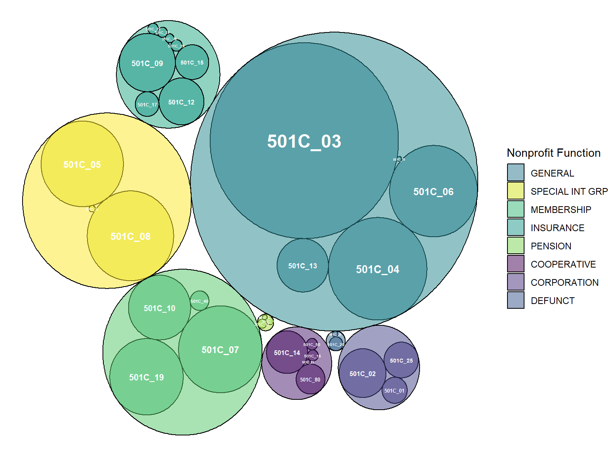
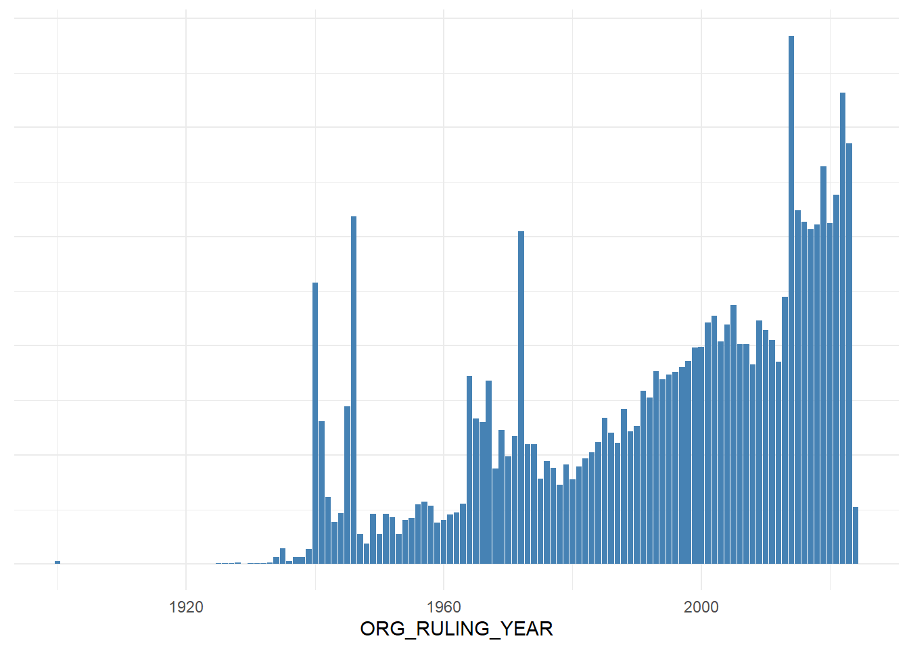
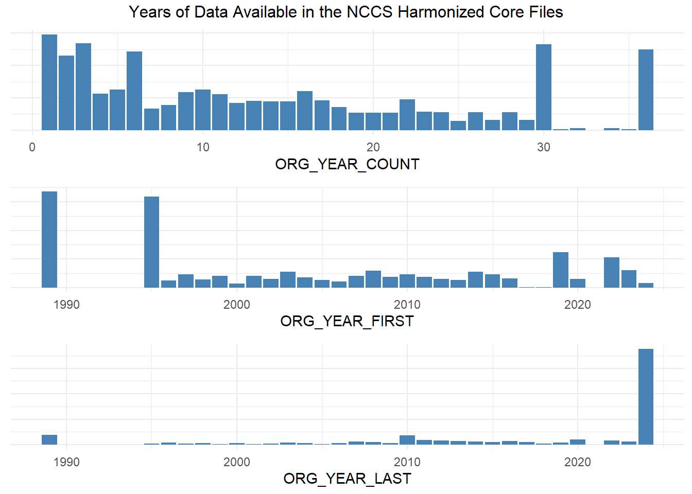

2 ORG Fields
ORG_ fields represent stable organizational traits that typically are not changing over time.
- EIN
- EIN2
- ORG_NAME
- ORG_NAME_SEC
- ORG_PERS_ICO
- ORG_FISCAL_PERIOD
- ORG_TYPE_501C
- ORG_TYPE_PF
- ORG_CORP_FORM
- ORG_RULING_DATE
- ORG_RULING_YEAR
- ORG_YEAR_FIRST
- ORG_YEAR_LAST
- ORG_YEAR_COUNT
2.1 Data from Step-00 PreProcessing
2.2 Fiscal Period (ORG_FISCAL_PERIOD)
| ORG_FISCAL_PERIOD | Freq |
|---|---|
| JAN (01) | 0.075 |
| FEB (02) | 0.073 |
| MAR (03) | 0.090 |
| APR (04) | 0.080 |
| MAY (05) | 0.083 |
| JUN (06) | 0.137 |
| JUL (07) | 0.077 |
| AUG (08) | 0.083 |
| SEP (09) | 0.086 |
| OCT (10) | 0.081 |
| NOV (11) | 0.068 |
| DEC (12) | 0.067 |
| NA | 0.000 |
2.3 Corporate Form (BMF_CORP_FORM)
| code | label |
|---|---|
| 0 | UDC (0) |
| 1 | CORPORATION (1) |
| 2 | TRUST (2) |
| 3 | COOPERATIVE (3) |
| 4 | PARTNERSHIP (4) |
| 5 | ASSOCIATION (5) |
| 6 | UDC (6) |
| ORG_CORP_FORM | Freq |
|---|---|
| UDC (0) | 10,518 |
| CORPORATION (1) | 1,586,341 |
| TRUST (2) | 60,682 |
| COOPERATIVE (3) | 2,056 |
| PARTNERSHIP (4) | 129 |
| ASSOCIATION (5) | 486,704 |
| UDC (6) | 2,899 |
| NA | 1,367,238 |
2.4 Tax Exempt Type (ORG_501C_TYPE)
| ORG_TYPE_501C | Freq |
|---|---|
| 501C_00 | 253 |
| 501C_01 | 808 |
| 501C_02 | 10,041 |
| 501C_03 | 2,540,321 |
| 501C_04 | 190,013 |
| 501C_05 | 92,560 |
| 501C_06 | 121,269 |
| 501C_07 | 97,891 |
| 501C_08 | 114,748 |
| 501C_09 | 20,913 |
| 501C_10 | 30,248 |
| 501C_11 | 12 |
| 501C_12 | 8,617 |
| 501C_13 | 14,025 |
| 501C_14 | 5,859 |
| 501C_15 | 2,564 |
| 501C_16 | 27 |
| 501C_17 | 640 |
| 501C_18 | 6 |
| 501C_19 | 58,666 |
| 501C_20 | 65 |
| 501C_21 | 30 |
| 501C_23 | 3 |
| 501C_24 | 4 |
| 501C_25 | 2,826 |
| 501C_26 | 11 |
| 501C_27 | 18 |
| 501C_29 | 23 |
| 501C_40 | 252 |
| 501C_50 | 30 |
| 501C_70 | 1 |
| 501C_71 | 1 |
| 501C_80 | 1,629 |
| 501C_81 | 1 |
| 501C_82 | 35 |
| 501C_90 | 916 |
| 501C_91 | 1,460 |
| 501C_92 | 9,934 |
| 501C_93 | 2,478 |
| NA | 187,369 |

2.5 Ruledate (ORG_RULING_DATE)

2.6 Core Data Availability
- ORG_YEAR_FIRST: first time an organization appears in an NCCS Core Database
- ORG_YEAR_LAST: last year they appear in the NCCS Core Database
- ORG_YEAR_COUNT: number of appearances in the NCCS Core Database
